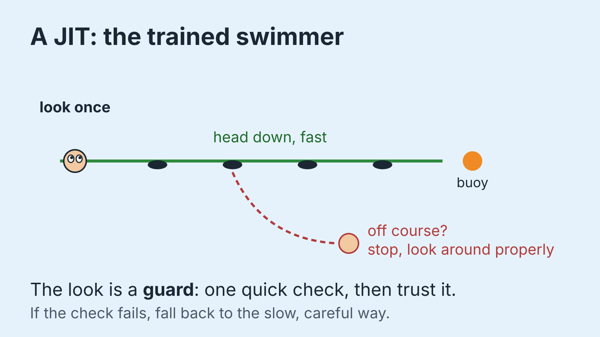
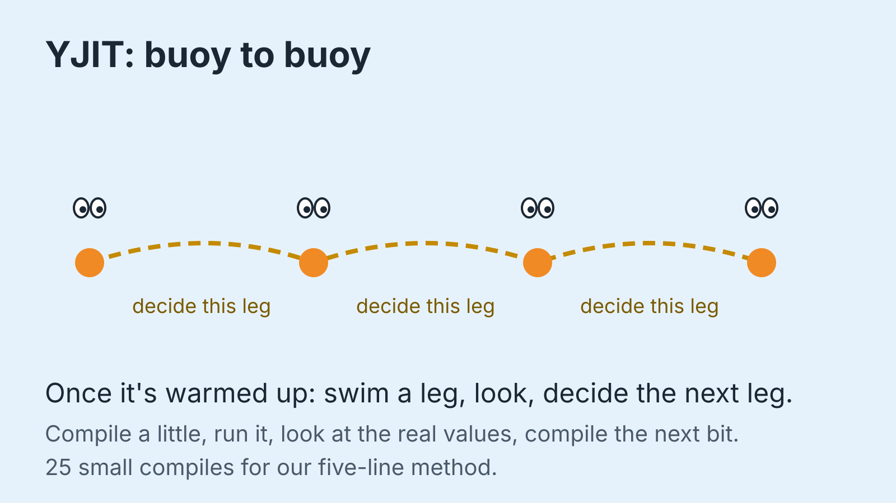
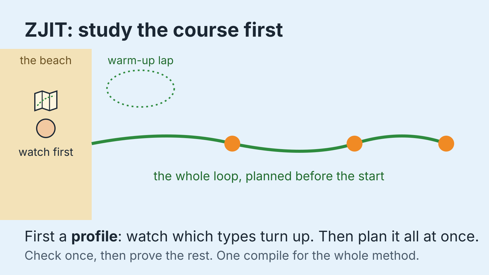
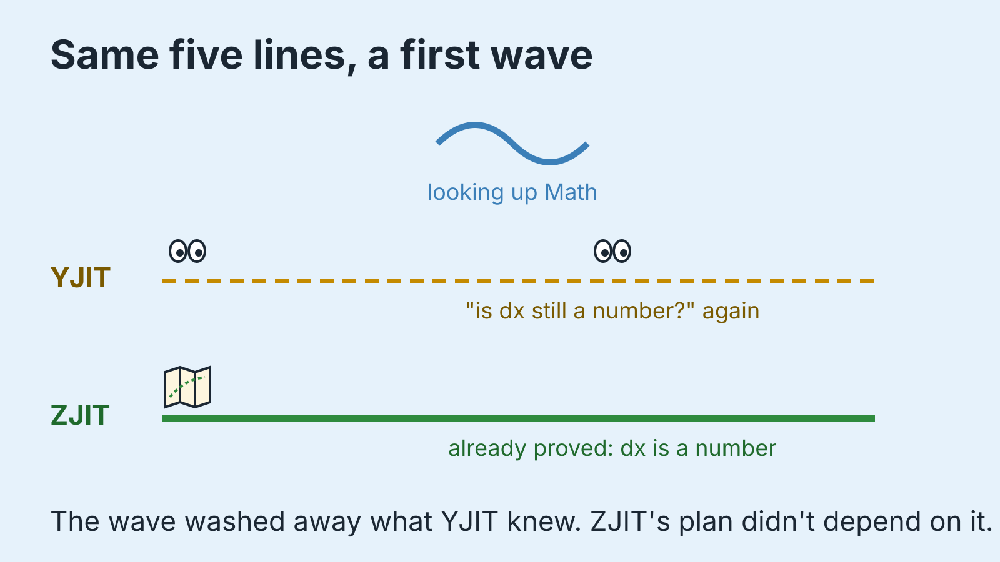
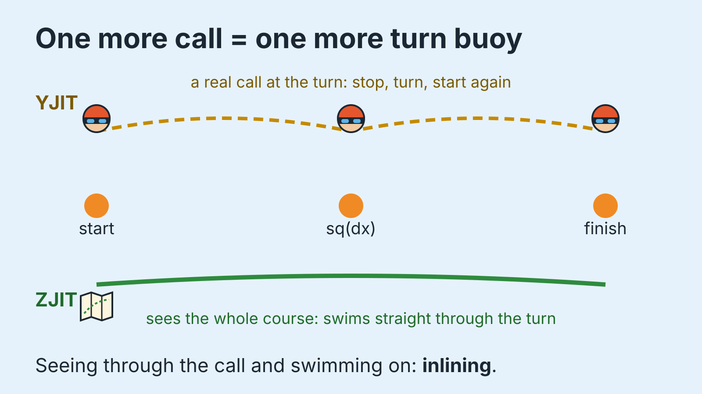

The Ceiling: Why Ruby 4.0 Needed a Second Compiler
Dhruva Sagar · RubyConf 2026
Ruby 4.0 ships two JIT compilers. Why build the second one?
Two JITs. Why?
Ruby 4.0 ships two just-in-time compilers.
YJIT already makes real Rails apps faster.
So why build a second one?
How Ruby runs your code
class Point attr_reader :x, :y def initialize(x, y) = (@x, @y = x, y) end
def distance(a, b) dx = a.x - b.x dy = a.y - b.y Math.sqrt(dx * dx + dy * dy) end
ruby -r ./distance -e 'puts RubyVM::InstructionSequence.of(method(:distance)).disasm'
0000 getlocal_WC_0 a@0 0002 opt_send_without_block <calldata!mid:x, argc:0, ARGS_SIMPLE> 0004 getlocal_WC_0 b@1 0006 opt_send_without_block <calldata!mid:x, argc:0, ARGS_SIMPLE> 0008 opt_minus <calldata!mid:-, argc:1, ARGS_SIMPLE> 0010 setlocal_WC_0 dx@2 ... 0040 opt_send_without_block <calldata!mid:sqrt, argc:1, ARGS_SIMPLE> 0042 leave
Ruby 4.1.0-preview1
The interpreter: head up, every stroke

What a JIT does

YJIT: buoy to buoy

YJIT, in its own words
# Block: distance@distance.rb:7 # Insn: 0002 opt_send_without_block (stack_size: 1) # call to Point#x # guard not immediate # guard known class # guard shape # Block: distance@distance.rb:7 # Insn: 0004 getlocal_WC_0 (stack_size: 1) # defer_compilation ... # Insn: 0008 opt_minus (stack_size: 2) # guard arg0 fixnum # guard arg1 fixnum
Each Block is one leg. guard is a sight. defer_compilation is the next buoy: "decide when I get there".
Ruby 4.1.0-preview1 · ruby --yjit --yjit-dump-disasm
ZJIT: study the course

ZJIT: the IR on one slide
fn distance@distance.rb:7: bb3(v15:BasicObject, v16:BasicObject, v17:BasicObject): v79:ObjectSubclass[class_exact:Point] = GuardType v16 v83:BasicObject = LoadField v79, :@x v86:ObjectSubclass[class_exact:Point] = GuardType v17 v90:BasicObject = LoadField v86, :@x v93:Fixnum = GuardType v83, Fixnum recompile v94:Fixnum = GuardType v90, Fixnum v95:Fixnum = FixnumSub v93, v94 ... v118:Fixnum = FixnumMult v95, v95 v122:Fixnum = FixnumMult v114, v114 v126:Fixnum = FixnumAdd v118, v122 v130:BasicObject = CCallWithFrame v54, :Math.sqrt, v126 Return v130
The whole method, planned at once. GuardType is a sight. v95 is dx: proved a number once, used twice with no more checks.
Ruby 4.1.0-preview1 · ruby --zjit --zjit-dump-hir
25 compiles, or one
Call distance 40 times, default settings. Each JIT logs what it compiles.
YJIT ZJIT call 30 call 30 distance@distance_log.rb:7 (index: 0) distance@distance_log.rb:7 distance@distance_log.rb:7 (index: 2) ... distance@distance_log.rb:10 (index: 42)
Both start at call 30. YJIT: 25 small compiles, leg by leg. ZJIT: 1, the whole method.
Ruby 4.1.0-preview1 · --yjit-log / --zjit-log-compiled-iseqs
A first wave

A first wave, in the output
YJIT ZJIT # Insn: 0024 opt_getconstant_path (stack_size: 0) PatchPoint StableConstantNames(Math) # clear local variable types v118:Fixnum = FixnumMult v95, v95 # Insn: 0030 opt_mult (stack_size: 3) # guard arg0 fixnum
One more call
def sq(n) = n * n def distance(a, b) dx = a.x - b.x dy = a.y - b.y Math.sqrt(sq(dx) + sq(dy)) end
One more call is one more buoy

At the turn buoy
YJIT ZJIT # call to Object#sq v95:Fixnum = FixnumSub v93, v94 # push callee control frame ... # clear local variable types PushInlineFrame :sq, v116, num_args=1 # Block: sq@distance_sq.rb:6 v169:Fixnum = FixnumMult v95, v95 # Insn: 0004 opt_mult (stack_size: 2) PopInlineFrame # guard arg0 fixnum # guard arg1 fixnum
YJIT: a real call, a fresh start, and the check again. ZJIT: sq spliced in, v95 reused, no check.
Ruby 4.1.0-preview1
Why ZJIT was built

"we want to both raise the performance ceiling (bigger compilation unit size and SSA IR) and encourage more outside contribution (by becoming a more traditional method compiler)." — Max Bernstein, ZJIT team, Rails at Scale, 2025-12-24
A method you already run
def [](key) super(convert_key(key)) end def convert_key(key) Symbol === key ? key.name : key end
Top-20 calls to C functions from JIT code (99.3% of total 310,501): Hash#[]: 199,971 (64.4%)
params[:id] in every Rails app. Most of the time isn't in this Ruby at all: it's Hash#[], written in C.
activesupport 8.1.4.1 · Ruby 4.1.0-preview1
Where it gives up

Calm water, choppy water
def double(x) = x + x
Calm water: only Integers in the warm-up lap. ZJIT inlines it: one sight, one add.
PushInlineFrame :double, v23, num_args=1 v44:Fixnum = GuardType v10, Fixnum recompile v46:Fixnum = FixnumAdd v44, v44 PopInlineFrame
Choppy water: five types. Five checks, five calls into C, then a general fallback.
CondBranchHasType v10, Flonum, bb6(), bb7() v52:BasicObject = CCallWithFrame v20, :Float#+, v10 CondBranchHasType v10, Fixnum, bb8(), bb9() v55:BasicObject = CCallWithFrame v25, :Integer#+, v10 ... v43:BasicObject = Send v10, :+, v10 # SendFallbackReason: Send: polymorphic fallback
Ruby 4.1.0-preview1 · ruby --zjit --zjit-dump-hir
The feed stop

What it means for Ruby
YJIT compiles Ruby a bit at a time, deciding as it goes; ZJIT plans a whole method at once, so it can see through small method calls and stop paying for them. That's the room Ruby needed to keep getting faster.
ruby -e 'puts RubyVM::InstructionSequence.of(method(:m)).disasm' ruby --zjit --zjit-dump-hir your_hot_path.rb ruby --zjit --zjit-stats your_hot_path.rb
Slides, code, every capture, and a full write-up: [REPO-URL]
Which part is slow?
Next time someone says "Ruby is slow", ask: which part?
[REPO-URL]